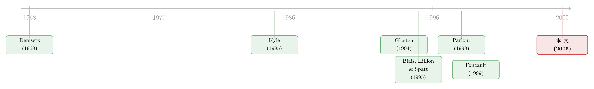

买卖价差为什么会「自己长回去」？——把限价订单簿当成一座流动性的集市
本文读的是 Foucault, Kadan & Kandel (2005, Review of Financial Studies)：他们把限价订单簿写成一座「流动性的集市」，让交易者按自己的耐心程度，自由选择是去买即时性（市价单）还是卖即时性（限价单）。核心结论出人意料地干净——决定整个订单簿动态、尤其是买卖价差「弹回」速度（market resiliency, 市场弹性）的，归根结底只有两个变量：耐心交易者的占比和订单到达率。耐心的人越多，市场反而越「有弹性」；订单来得越勤，弹性反而越差。
1 一个被理论忽略了几十年的问题
先说一个交易员每天都见、理论家却长期说不清的现象。
一连串市价卖单砸下来，买卖价差 (bid-ask spread) 被瞬间拉宽；然后呢？你会看到价差慢慢地、一档一档地缩回去，直到下一笔成交把它重新压回竞争水平。Biais, Hillion & Spatt (1995) 在巴黎证券交易所的数据里反复看到这个图景：流动性需求冲击推高价差，随后限价单像填坑一样把它一点点补平。
这个「弹回」的过程，有个专门的名字——市场弹性 (market resiliency)。早在 Black (1971) 和 Kyle (1985) 给「流动性」下定义时，它就和「窄」(tight，价差小)、「深」(deep，价格冲击小) 并列为三大支柱之一。
可问题在于：价差和深度，几十年来被无数静态模型反复研究；唯独弹性这根支柱，几乎没人碰过。原因不难理解——弹性天生是个动态概念。它说的不是「此刻价差多大」，而是「价差被打乱之后，要花多久、靠什么机制才能恢复」。这就要求你写一个真正随时间演化的订单簿模型，而不是拍一张静态快照。
这正是本文要补上的那块拼图。
2 把订单簿重新理解成「流动性的集市」
接着，一个自然的问题是：限价单和市价单，到底在交易什么？
作者给了一个漂亮的重新定义。投资者的交易需求在时间上并不同步，可成交又要求买卖双方同时在场。市场解决这个矛盾有三种办法：集合竞价、做市商市场、限价订单市场。集合竞价让所有人等到同一时刻，谁也得不到即时性；做市商市场则不论你想不想要，都按同一个价格把即时性塞给所有人。只有限价订单市场，让投资者自己选——要么花钱买即时性，要么收钱卖即时性。
于是：
- 市价单 (market order) = 需求即时性。立即成交，但要承担价差这个「即时性的价格」。
- 限价单 (limit order) = 供给即时性。价格更优，但成交既不即时也不一定，要承担「等待」的代价。
最优的下单选择，就是在「延迟成交的成本」和「即时性的成本」之间做权衡。这个权衡不是作者发明的——Demsetz (1968, p. 41) 早就一针见血：「等待成本对于在有组织市场上交易的人相当重要，似乎主导了价差的形成。」他甚至预言：越激进的限价单越会被提交，以缩短预期的成交时间，而这驱动着整个订单簿的动态。
本文几乎可以看成是给 Demsetz 这句话写的一份严格证明。把「等待成本」放进交易者的目标函数，市价单与限价单的选择就不再是外生设定，而是从耐心程度里内生地长出来——这恰恰是本文区别于此前所有限价订单模型的关键。
3 模型设定：耐心的人和着急的人
现在把舞台搭起来。
考虑一只证券，价格被锁在区间 \([B, A]\) 内（区间外有竞争性的「外缘交易者」无限供给，保证价格不出界）。所有价格落在以最小报价单位 (tick size) \(\Delta\) 为间隔的网格上。最优买价 \(b\)、最优卖价 \(a\)，内部价差 (inside spread) 定义为
$$ s \equiv a - b, $$
以 tick 数计量，取值范围 \(s \in \{1, \dots, K\}\)，其中 \(K \equiv A - B\)。
交易者按到达率为 \(\lambda > 0\) 的泊松过程 (Poisson process) 依次到来，因此相邻到达的间隔服从指数分布，平均每隔 \(1/\lambda\) 来一个人。每个到来的人要么是买方、要么是卖方（假设 A.3：买卖严格交替），都只想成交一单位。
关键设定在这里：交易者按等待成本分两类。
- 耐心型 (type \(P\))：每单位时间的等待成本为 \(\theta_P\)；
- 着急型 (type \(I\))：每单位时间的等待成本为 \(\theta_I\)，满足 \(\theta_I > \theta_P > 0\)。
耐心交易者的占比固定不变。作者给了个很接地气的解释：耐心型像是按长期基本面调仓的「价值型」组合经理；着急型则是套利者、技术交易者、指数追踪者，或者替客户跑腿、生怕拖久了被指责失职的经纪人。Keim & Madhavan (1995) 的证据正好支持这种划分——指数与技术交易者更爱下市价单，价值交易者更爱下限价单。
一个值得强调的「减法」：本文里没有信息不对称。价差与等待，全部来自 (i) 等待成本本身，和 (ii) 耐心交易者的策略性「寻租」。这看似是简化，其实是有据的——Huang & Stoll (1997) 估计平均而言 88.8% 的价差来自非信息性摩擦（所谓订单处理成本）。既然现实里非信息摩擦这么大，搞清楚「没有信息不对称时价格如何形成」就格外重要。
4 核心权衡：一个方程讲清下单决策
把上面的设定压缩成交易者的目标函数。
一个 type \(i\) 的交易者，面对价差 \(s\)，可以选一个让价差变成 \(j\) 档的「\(j\)-限价单」（\(j=0\) 就是市价单）。相对于市价单，下限价单的净收益是：价格改善 \(j\Delta\)，减去预期等待成本 \(\theta_i T(j)\)，其中 \(T(j)\) 是 \(j\)-限价单的预期成交时间。于是他求解的程序 (1) 就是：
整个模型的全部张力，都在这一行里：越激进的限价单（\(j\) 越大）价格越优，但要排在越靠后的队伍里，等得越久。 着急的人（\(\theta_i\) 大）对第二项更敏感，于是更倾向于干脆下市价单立刻成交；耐心的人则愿意用等待换价格。
由此引出一个关键概念——保留价差 (reservation spread)。因为下限价单至少要等一个周期（平均 \(1/\lambda\)），最低的预期等待成本是 \(\theta_i/\lambda\)。所以 type \(i\) 能建立的最小价差，是使得 \(j\Delta - \theta_i/\lambda \geq 0\) 成立的最小整数：
$$ j_i^{*} \equiv \mathrm{CF}\!\left(\frac{\theta_i}{\lambda\,\Delta}\right), \qquad i \in \{P, I\}, \tag{2}$$
其中 \(\mathrm{CF}(\cdot)\) 是向上取整函数。注意这个式子的味道：保留价差随等待成本 \(\theta_i\) 上升，随到达率 \(\lambda\) 和 tick \(\Delta\) 下降。耐心交易者的保留价差 \(j_P^*\) 被称为「竞争性价差」——没人会挂出比它更窄的限价单。
5 递归的等待时间，与可解的均衡
但真正关键的一步，是怎么把 \(T(j)\) 这个内生的预期等待时间算出来。这里藏着本文方法论上最巧的地方。
设 \(\pi_k(j)\) 为「下一个到来的人用 \(k\)-限价单回应」的概率（\(k=0\) 即市价单）。Lemma 1 给出等待时间的递归结构：
$$ T(j)= \begin{cases} \dfrac{1}{\lambda}, & j = 1,\\[2mm] +\infty, & \pi_0(j)=0,\ j\in\{2,\dots,K-1\},\\[2mm] \dfrac{1}{\pi_0(j)}\left[\dfrac{1}{\lambda}+\displaystyle\sum_{k=1}^{j-1}\pi_k(j)\,T(k)\right], & \pi_0(j)>0,\ j\in\{2,\dots,K-1\}. \end{cases} $$
怎么理解这三行？第一行：面对一档价差，按假设 A.2（限价单必须至少改善一档），下一个人只能下市价单，所以一档限价单确定在一个周期内成交，\(T(1)=1/\lambda\)。第二行：如果一个 \(j\)-限价单永远招不来市价单（\(\pi_0(j)=0\)），那它永远成交不了，等待时间无穷大。第三行是核心：一个 \(j\)-限价单的等待时间，是那些「创造更小价差」的后续订单的等待时间的函数——于是等待时间函数是递归的。
这个递归结构来自一个简洁的排队事实：在本文假设下，限价单的执行有严格的价格优先顺序，一个限价单永远不会在比它价差更小的限价单之前成交。所以 \(j\)-限价单的等待时间，只取决于价差更小的那些订单。
递归性带来的红利是：整个博弈可以用归纳法逐档求解。从 \(s=2\) 出发（此时只能选市价单或一档限价单，而 \(T(1)=1/\lambda\) 已知），解出 \(\pi_k(2)\)，算出 \(T(2)\)；再推进到 \(s=3\)、\(s=4\)……每一类交易者在每一档都有唯一的最优策略，于是平稳均衡唯一。这正是为什么作者要费力地引入假设 A.1–A.3——它们把「订单簿状态」从「所有挂单」压缩成了「只看内部价差 \(s\)」一个维度，使动态博弈变得可解。
6 均衡的两副面孔，与「弹性」的真身
解出来的均衡，长成两副面孔。
同质情形（\(j_P^* = j_I^* = j^*\)，命题 1）：所有人都在 \(s \le j^*\) 时下市价单、在 \(s > j^*\) 时下一个 \(j^*\)-限价单。价差在 \(K\) 和竞争价差 \(j^*\) 之间来回跳，成交只在价差竞争时发生。作者称之为强弹性 (strongly resilient)——任何偏离都被下一个人立刻纠正。有意思的是，这个看似古怪的图景，恰恰对应了 Biais, Hillion & Spatt (1995) 在巴黎 Bourse 识别出的典型模式之一（其 Figure 3B）：价差在大、小两个值之间交替，所有成交都发生在价差小的时候。
异质情形（\(j_P^* < j_I^*\)，命题 2）：这才是主菜。存在一个临界价差 (cutoff spread) \(s_c \in [\,j_I^*,\, K\,]\)，把价差空间切成三段：
- \(s \le j_P^*\)：耐心与着急者都下市价单；
- \(j_P^* < s \le s_c\)：耐心者下限价单供给流动性，着急者下市价单需求流动性；
- \(s > s_c\)：所有人都下限价单，都把价差收到 \(s_c\)。
注意第二段的反直觉之处：即使价差已经超过了着急者的保留价差，着急者仍然下市价单。为什么？因为耐心者在大价差时不会下市价单——他们要去高位挂限价单赚那份「策略性租金」，这就拉长了任何限价单的预期等待，反过来又让着急者觉得「与其等，不如现在就成交」。流动性供给与需求，就这样从同一个耐心维度里内生地分化出来。
现在可以给「弹性」一个精确的度量了：作者把它定义为在一次流动性冲击后、价差在下一笔成交之前回到原先水平的概率。然后是全文最漂亮的两个比较静态结论：
- 耐心交易者占比上升 → 市场更有弹性。 直觉（也正是 Demsetz 的直觉）：耐心的人多了，流动性需求减少，限价单的预期成交时间被拉长；为了少等，流动性供给者会挂更激进的限价单，于是价差收窄得更快。
- 订单到达率 \(\lambda\) 上升 → 市场弹性反而下降。 到达率高意味着等待时间短，限价单交易者于是敢挂不那么激进的单子；结果是价差要经过更多笔订单才能弹回竞争水平，弹性下降。
这两条合在一起，给出了一个可检验的、关于成交间隔 (duration) 的预测：在给定上一笔成交价差的条件下，平均到下一笔成交的时间随价差增大而增大，且这个条件久期与市场弹性正相关——因为两者都随着急者占比上升而下降。这就把本文和 Engle & Russel (1998) 那条「自回归条件久期」的实证脉络接上了。
7 当 tick 变小，价差反而可能变大
这里有一个对监管者格外刺眼的推论。
直觉上，把最小报价单位 \(\Delta\) 调小，应该让价差更窄、市场更好才对。可本文（第 4 节）告诉你：在着急者主导的市场里，减小 tick 反而可能抬高价差。
机制是这样：tick 变小，意味着每一档限价单的价格改善 \(j\Delta\) 变小（回看保留价差公式 (2)，\(\Delta\) 在分母上，\(j_i^*\) 会变大）。于是交易者可以挂不那么激进的限价单——少改善一点价格也划算。在本就缺乏弹性的着急者市场里，这进一步损害了弹性，让大价差出现得更频繁。换句话说，缩小 tick 反而给了交易者「报价不必那么进取」的空间。
这一结论提醒我们：tick size 改革的福利效果取决于交易者群体的构成。同一项「减小 tick」的政策，在耐心者主导和着急者主导的市场里可能走向相反的结果。
8 文献脉络
把这条线捋一捋，本文的位置就清楚了。
最早的源头是 Demsetz (1968)——他把「等待成本」请进价差的讨论，并预言激进的限价单会驱动订单簿动态。接着是流动性的经典定义：Black (1971) 与 Kyle (1985) 把「窄、深、弹」三性立为标准，但此后几十年的理论几乎只啃前两性。
然后是一批静态的限价订单模型：Glosten (1994) 论证电子订单簿的「不可避免性」，Chakravarty & Holden (1995)、Rock (1996)、Seppi (1997)、Parlour & Seppi (2003) 研究限价单的最优报价。它们的共同短板是——静态，因而无法触及弹性；而且市价单/限价单的选择是外生的。

转折发生在动态模型上：Parlour (1998) 揭示报价决策如何受内部挂单深度影响，Foucault (1999) 分析「被吃单」(picked off) 风险对策略的影响，Goettler, Parlour & Rajan (2003) 把它建成一个随机序贯博弈并用数值方法求解。但在这些模型里，限价单交易者不承担等待成本，成交时间不影响报价。
而实证一侧，Biais, Hillion & Spatt (1995) 在巴黎 Bourse 描出了价差在冲击后均值回复的典型图景，Degryse et al. (2003)、Coppejans, Domowitz & Madhavan (2003) 接着研究这一现象——它们提出了「弹性」这个事实，却缺一个能解释它的理论。
本文恰好卡在这个交叉点上：第一个把等待成本驱动的市价/限价内生选择与市场弹性的动态分析焊在一起的均衡模型。它给的不是又一个静态报价公式，而是一台能预测价差分布、成交间隔、弹性如何随群体构成变化的「发动机」。沿着这条路再往后，Rosu (2004) 用了类似的思路（关于电子订单簿里的一些相关实证，可参见《看不见报价人的名字，价差为什么反而变窄了？》 与《谁在替这个没有做市商的市场「报价」？》）。
9 评论与延伸（Q&A + 研究方向）
(a) 几个可能的疑问
Q：本文「没有信息不对称」，这是不是把现实抽象得太干净了？
是一个有意识的取舍，而且有据。作者明确承认这是「first cut」——同时让交易者策略性地在市价/限价间选择、又引入信息不对称，动态模型几乎无法求解。更重要的是 Huang & Stoll (1997) 的证据：平均 88.8% 的价差来自非信息性摩擦。既然现实里这块占大头，先把「纯等待成本+策略寻租」这条线讲透，本身就有独立价值。
Q：买卖严格交替（假设 A.3）和「不能撤单」（A.1）会不会驱动了全部结论？
这是最该担心的地方。A.3 保证了限价单执行的价格优先排序，从而 Lemma 1 的递归性和归纳法可解性都依赖它；一旦买卖随机到达，一个买单可能在更早挂的卖单之前成交，递归就崩了。作者在第 5 节用例子论证主要直觉在放松 A.2、A.3 后仍然成立，但承认放松会让问题失去一般解析解。A.1（不能撤单/改单）则更实质——现实中限价单频繁撤改，这会改变弹性的微观机制。所以本文的结论应读作「机制性的」而非「定量精确的」。
Q：「耐心者越多，市场越有弹性」——这跟「耐心者多→流动性需求少→成交慢」不矛盾吗？
不矛盾，关键在区分「成交频率」和「弹性」。耐心者多确实让成交变慢（市价单少）；但正因为限价单要等更久，供给者被迫挂更激进的单子去缩短等待，于是价差一旦被打乱就回弹得更快——这才是弹性。频率和弹性走向相反，恰恰是本文最精巧的地方。
Q：为什么到达率 \(\lambda\) 上升会让弹性变差，这不反直觉吗？
反直觉，但逻辑自洽。\(\lambda\) 高 → 等待时间 \(1/\lambda\) 短 → 挂限价单的「时间成本」低 → 交易者敢挂不那么激进的单（每次只改善一点点）→ 价差需要更多笔订单才能弹回竞争水平 → 弹性下降。注意这里弹性是按「下一笔成交前回到原水平的概率」定义的，订单来得勤反而稀释了「单笔大幅改善」的动机。
Q：模型预测了日内 (intraday) 什么模式？
如果假设交易者在一天里越来越着急（耐心者占比下降），模型预测临近收盘时价差扩大、成交频率上升，同时限价单激进度与市场弹性下降。前两条与已有实证一致；据作者所知，最后一条（弹性的日内下降）当时尚未被检验——这本身就是一个留给后人的实证缺口。
Q：这和做市商市场的价差理论有什么本质不同？
做市商市场里，价差是中介为补偿库存/信息风险而设的报价；这里没有专职中介，价差是耐心交易者之间策略性供给即时性的均衡产物。同一个「价差」，在两类市场里的经济含义完全不同——本文等于给「没有做市商的市场，谁来定价差」给了一个答案。
(b) 几个可能的研究问题与提案
1. 把「等待成本异质性」搬到公司债的电子化交易平台上
【经济故事】公司债近年从纯做市商市场向 RFQ／电子限价簿混合演进。本文的核心变量「耐心者占比」在债市有天然对应——做长期配置的保险/养老金 vs. 急于调仓的债券基金。弹性的群体构成依赖性，在债市可能比股市更强。 【可行性】中。需要带交易者类型标签的 TRACE 增强数据或平台层级订单簿数据，识别上可用「基金赎回冲击」作为外生的「着急度」变动。难点是债券异质性高、单券成交稀疏。
2. tick size 改革的弹性效应：按群体构成做异质性检验
【经济故事】本文预言减小 tick 在着急者主导的市场里可能抬高价差、损害弹性。美国的 Tick Size Pilot (2016–2018) 提供了一个近实验。 【可行性】高。Pilot 是分组随机的，识别干净；用机构持股比例、换手率代理「耐心者占比」，做异质性双重差分 (difference-in-differences, DiD)，直接检验「tick↓ 的弹性效应是否随着急者占比放大」。数据（TAQ + 13F）现成。
3. 外资持有人会改变一国市场的「弹性」吗？
【经济故事】外资常被刻画为更「着急」、更追涨杀跌（也常被骂作「蝗虫」，见《外资真是「蝗虫」吗？》）。若外资占比上升等价于「着急者占比上升」，本文预测该市场弹性下降、大价差更频繁。 【可行性】中。需要分市场的订单簿数据 + 外资持股比例，识别可借助指数纳入（如 MSCI 纳入）带来的外生外资流入。难点是把「外资」干净地映射到「等待成本」维度。
4. 用成交间隔反推「隐含耐心者占比」
【经济故事】本文给出「条件久期随价差增大而增大」「久期与弹性正相关」的结构关系。反过来，能否从高频成交间隔数据里结构式地估计出市场的耐心者占比这个隐变量？ 【可行性】中偏低。需要把 Lemma 1 的递归 \(T(j)\) 嵌进一个结构估计框架（类似 Hollifield, Miller & Sandås 那一路），计算量大，且高度依赖 A.1–A.3 等强假设是否近似成立。理论漂亮，落地有难度。
我的判断
本文的贡献是概念性的而非定量的：它第一次把「市场弹性」这根被忽视的流动性支柱，放进一个可解析、可求出唯一平稳均衡的动态框架里，并漂亮地证明了 Demsetz 半个世纪前的直觉——驱动订单簿动态的，是交易者用激进限价单去缩短等待的策略。把「限价/市价的选择」从外生设定变为「等待成本异质性」的内生产物，这一步在文献里是真正的位移。
对识别（在这里其实是「对结论稳健性」）的担忧集中在三条简化假设上：买卖严格交替、不可撤单、订单簿状态可压缩为单一价差。它们是可解性的代价，但也意味着模型对「撤单频繁、买卖随机」的真实电子市场只能给出方向性而非精确的预言。我尤其想看到的后续是：(i) 那条「弹性的日内下降」预测的直接实证检验；(ii) 在可撤单环境下，弹性结论是被加强还是被推翻——因为撤单本身就是供给即时性者的一种「反悔」，很可能正是现实弹性的主要来源。
参考文献
- Biais, B., Hillion, P., & Spatt, C. (1995). An Empirical Analysis of the Limit Order Book and the Order Flow in the Paris Bourse. Journal of Finance 50(5), 1655–1689.
- Black, F. (1971). Towards a Fully Automated Exchange, Part I. Financial Analysts Journal 27, 29–34.
- Demsetz, H. (1968). The Costs of Transacting. Quarterly Journal of Economics 82, 33–53.
- Engle, R., & Russel, J. (1998). Autoregressive Conditional Duration: A New Model for Irregularly Spaced Transaction Data. Econometrica 66, 1127–1162.
- Foucault, T. (1999). Order Flow Composition and Trading Costs in a Dynamic Limit Order Market. Journal of Financial Markets 2, 99–134.
- Foucault, T., Kadan, O., & Kandel, E. (2005). Limit Order Book as a Market for Liquidity. Review of Financial Studies 18(4), 1171–1217.
- Glosten, L. (1994). Is the Electronic Order Book Inevitable? Journal of Finance 49, 1127–1161.
- Goettler, R. L., Parlour, C. A., & Rajan, U. (2003). Equilibrium in a Dynamic Limit Order Market. Journal of Finance 60, 2149–2192.
- Huang, R., & Stoll, H. (1997). The Components of the Bid-Ask Spread: A General Approach. Review of Financial Studies 10, 995–1034.
- Keim, D., & Madhavan, A. (1995). Anatomy of the Trading Process: Empirical Evidence on the Behavior of Institutional Traders. Journal of Financial Economics 37, 371–398.
- Kyle, A. (1985). Continuous Auctions and Insider Trading. Econometrica 53, 1315–1335.
- Parlour, C. (1998). Price Dynamics in Limit Order Markets. Review of Financial Studies 11, 789–816.
- Seppi, D. (1997). Liquidity Provision with Limit Orders and a Strategic Specialist. Review of Financial Studies 10, 103–150.